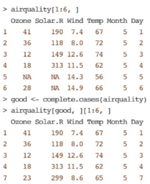

Anotações Fal
R Programming for Data Science - Peng Anotado
Statistics and Computing - Chambers Anotado
R Programming
Semana 1
Básico
x <- 5
x #prints 5
print(x) #prints 5
x <- 1:20
x #prints de 1 a 20
Existem 5 tipos de objetos básicos ou classes atômicas no R
- caractere
- numérico (ℝ)
- inteiro
- complexo
- lógico (T/F)
O mais básico de todos é o vetor
vetores contêm apenas objetos da mesma classe (exceto quando se trata de listas)
x <- vector() #cria um vetor vazio
x <- 1L #é um número inteiro
1 / 0 #gera Inf que é infinito, na verdade um número real grande
0 / 0 # gera NaN = Not a Number, não um número
Atributos
Objetos em R tem atributos
- nomes, nomes de dimensões
- dimensões
- classe
- tamanho (length)
- metadados e demais atributos
attributes() #acessar atributos de um objeto str(coloca_função_aqui) # acessar cacaterísticas de uma função # toda função vem com parễnteses
c(), a função concatenar, gerar vários objetos unidos
x <- c(0.5, 0.6) #vetor numérico
x <- 9:28 #vetor de inteiros
x <- c(2+0i, 4+3i) # vetor complexo
#coerção existe quando mais de uma classe está concatenada
y <- c(1.7, "a") # tudo vira caractere
y <- c(TRUE, 2, FALSE) # tudo vira numérico: nesse caso 1, 2 e 0
y <- c("a", FALSE) # tudo vira caractere
coerção explícita, as.alguma_coisa()
> x <- 0:6
> class(x)
[1] "integer"
> as.numeric(x)
[1] 0 1 2 3 4 5 6
> as.logical(x)
[1] FALSE TRUE TRUE TRUE TRUE TRUE TRUE
> as.character(x)
[1] "0" "1" "2" "3" "4" "5" "6"
> x <- c("a", "b", "c")
> as.numeric(x)
[1]
NA NA NA
Warning message:
NAs introduced by coercion
> as.logical(x)
[1] NA NA NA
> as.complex(x)
[1] NA NA NA
Warning message:
NAs introduced by coercion
Criando uma lista
x <-list(1, "a", 4 + 9i)
Matrizes
m <- matrix(nrow = 2, ncol = 3) # cria matriz vazia
m <- matrix(1:6, nrow = 2, ncol = 3) # cria matriz onde a11 = 1, a12 = 2, a21 = 3 etc.
dim(m) #imprime dimensões da matriz
attributes(m) # mostra atributos da matriz
# ao pegar uma lista, é possível torna-lá uma matriz:
lista <- 1:10
lista
numero_de_linhas <- 5
numero_de_colunas <- 2
dim(lista) <- c(numero_de_linhas, numero_de_colunas) # forçar uma dimensão na lista
lista
# é possível criar uma matriz de duas (ou mais) listas
x <- 1:3
y < 20:22
z <- 115:117
cbind(y,z,x) # cola as listas lado a lado como colunas na ordem definida
y z x
[1,] 20 115 1
[2,] 21 116 2
[3,] 22 117 3
rbind(y,z,x) # cola as listas de cima pra baixo em linhas
[,1] [,2] [,3]
y 20 21 22
z 115 116 117
x 1 2 3
Factor, é um vetor de inteiros em que cada número tem um rótulo (ordenado ou não)
são importantes para funções como lm() e glm() para regressões
> f <- factor(c("yes", "yes", "no", "yes", "no"))
> f
[1] yes yes no yes no
Levels: no yes
> table(f) # mostra a frequência de cada categoria
f
no yes
2 3
> unclass(f) # mostra os inteiros associados aos rótulos em ordem de acordo
[1] 2 2 1 2 1 # com a lista concatenada original
attr(,"levels")
[1] "no" "yes" # mostra os rótulos em ordem do inteiro atribuído,
# ou seja "no" = 1, "yes" = 2
É possível escolher quais rótulos são associados a cada inteiro
> f <- factor(c("yes", "yes", "no", "yes", "no"),
levels = c("yes", "no"))
> f
[1] yes yes no yes no
Levels: yes no
> unclass(f)
[1] 1 1 2 1 2
attr(,"levels")
[1] "yes" "no"
Sabendo que podemos forçar atributos a listas (ex. dim(lista) <- c(2,5)) podemos também atribuir qualquer ordenação de "levels" que quisermos após a criação do vetor de fatores como o "f" criado anteriormente.
> f
[1] yes yes no yes no
Levels: yes no # ou seja "yes" = 1 e "no" = 2
> levels(f) <- c("no", "yes")
> f
[1] no no yes no yes
Levels: no yes # ou seja "no" = 1 e "yes" = 2
> levels(f) <- c("yes", "no")
> f
[1] yes yes no yes no
Levels: yes no # ou seja "yes" = 1 e "no" = 2
Assim podemos alterar até quais rótulos utilizamos
> levels(f) <- c("não", "sim")
> f
[1] não não sim não sim
Levels: não sim
> levels(f) <- c("batata", "manjericão")
> f
[1] batata batata manjericão
[4] batata manjericão # como vimos acima o [4] só significa que
Levels: batata manjericão # é a continuação da lista começando pelo
# 4º item.
Valores Inexistentes
NaN significa que valor numérico não existe NA significa que não existe determinada coisa em geral
x <- (c(1, 2, NA, 10, 3))
# para testar se algo existe ou não podemos usar as funções
is.na(x)
# e
is.nan(x)
NaN necessáriamente é Na, todavia Na não é necessáriamente um número não existente, portanto Na não necessáriamente é NaN.
x <- (c(1, 2, NAN, 10, 3))
# para testar se algo existe ou não podemos usar as funções
is.na(x)
# e
is.nan(x)
Data Frame
É uma matriz que aceita diferentes tipos de valores, ou seja
é uma tabela.
Cada linha na tabela pode ter um nome row.names() (o default são números começando
pelo número 1), o que é bom para rotular diferentes observações na tabela.
Tabelas podem ser criadas chamando read.table(), ou read.csv()
para abrir um arquivo.
Tabelas podem ser tranformadas em matrizes com data.matrix(), poreḿ sofreram coerção
e serão transformados no mesmo tipo de objeto.
Criando um Data Frame:
> x <- data.frame(foo = 1:4, bar = c(T, T, F, F))
> x
foo bar
1 1 TRUE
2 2 TRUE
3 3 FALSE
4 4 FALSE
nrow(x) pergunta sobre x o número de linhas
ncol(x) pergunta sobre x o número de colunas
Nomes
Todos os objetos em R podem ter um nome, um rótulo utilizando names().
> x <- 1:3
> names(x) # dar erro pois nada foi atribuído
NULL
> names(x) <- c("João", "Maria", "José")
> x
João Maria José
1 2 3
Vale lembrar que o exemplo acima não atribui os valores 1, 2 e 3 a João, Maria e José, e sim que passamos a chamar 1, 2 e 3 de João, Maria e José.
> names(x)
[1] "João" "Maria" "José"
listas e matrizes podem ter nomes
listas
> z <- list(a = 1, b = 2, c =3)
> z
$a
[1] 1
$b
[1] 2
$c
[1] 3
> names(z)
[1] "a" "b" "c"
matrizes
No exemplo primeiro criamos uma matriz, para ter algo a trabalhar
> m <- matrix(1:6, nrow = 2, ncol = 3)
Daí criamos os nomes. Fazemos uma lista com duas concatenações: a primeira com os nomes das linhas e a segunda com os nomes das colunas.
> dimnames(m) <- list(c("Loja da Solange","Loja da Fátima"),c("Preço do Computador","Preço da TV", "Preço do Laptop"))
> m
Preço do Computador Preço da TV Preço do Laptop
Loja da Solange 1 3 5
Loja da Fátima 2 4 6
Lendo e Escrevendo Dados em Tabela
chave:
Para leitura
para escrever
read.table() e read.csv() são utilizados para a leitura de dados em tabela dentro
de arquivos.
write.table()
readLines() é usado para ler linhas dentro de arquivos de texto (ou qualquer outro
tipo de arquivo) e devolve no R como caracteres. ex. 10 primeiras linhas readLines("foo.txt", 10)
writeLines
source() faz a leitura de arquivos escritos na linguagem R.
dump
dget() faz a leitura de arquivos com código R parsed em arquivos de texto.
dput()
load() faz a leitura de arquivos com código binário.
save()
unserialized() faz a leitura de um único objeto R em escrito em binário.
serialize
read.table()
é muito importante ler o help(read.table) !!!
Antes de começar, é importante saber se o RAM do computador comporta o tamanho do detaset.
Conheça a sua maquina, do que ela é capaz e o que está rodando nela atualmente.
A função mais utilizada para chamar arquivos. Normalmente utiliza-se dessa função apenas
com o argumento file. (ex.read.table("aquivo.csv") ou read.table("\Documents and Settings\SeuNome\My Documents\arquivo.csv"))
Os argumentos são as coisas que colocamos dentro de funções. Na função read.table() elas são
read.table(file,header ,sep ,colClasses ,nrows ,comment.char ,skip ,stringAsFactors)
file é o nome do arquivo, ou algo que conecta a ele.
geralmente é um arquivo junto ao seu path (ex. C:\Documents and Settings\SeuNome\My Documents\arquivo.csv)
header é um indicação à função dizendo que há uma linha de header.
header seria a lista de nomes para cada coluna no topo da tabela
sep indica como as colunas são separadas (ex. sep=':' significa colunas separadas por : )
o caractere utilizado para separar as colunas é chamado de separador
colClasses um vetor de caractere indicando a classe de cada coluna no dataset (conjunto de dados).
é opcional colocar isso como vetor dentro da função se o arquivo for muito grande, ajuda muito colocar isso pra ficar mais rápido a leitura. caso for aplicado o tipo de apenas uma coluna, supõe-se que as outras são iguais
truque para agilizar esse passo:
initial <- read.table("datatable.txt") classes <- sapply(initial, class) # saaĺy() passa pelo "initial" e roda class(), retornando o valor e aplicando a "classes" tabAll <- read.table("datatable.txt,colClasses = classes)
nrows o número de linhas no dataset
facilita velocidade do cálculo de RAM necessário
comment.char indica o caractere utilizado para comentários
é bom fazer
comment.char=""se não existe comentários no arquivo
skip o numero de linhas para pular do início do dataset
stringAsFactors as variáveis em caracteres devem ser considerados factors?
o default é isso ser ativado caso não seja explicitado na função
Quando feito a leitura, R pula linhas com # (pois significa comentários), vai ver quantas linhas existem e quanta memória precisa pra ler o arquivo e identifica que tipo de variável existe em cada coluna.
read.csv() é identico ao read.table(), porém o separador é a vírgula.
bom pra ler arquivos no formato .csv
Calculando Memória RAM Necessária
Caso nrows = 1500000 e ncol = 120 com dados do tipo numérico (8 bytes) temos: 1.500.000 x 120 x 8 = 1440000000 bytes = 14.400.000.000 / 2²º = 1.373,29 MB / 1000 = 1,34 GB com 2 GB de RAM, você tá puxando demais e pode haver A regra de dedo é ter o dobro de RAM
dumping e dputing
dump() e dput()
vantagens:
- formato textual
- editável diretamente (bom se arquivo estiver corrumpido)
- metadados são salvos (ex. o tipo dos dados)
- mais fácil para controle de versão (tipo usando git)
- aderem à filosofia Unix
desvantagens:
- abrir o arquivo no notepad para ler sem R é difícil por ser textual
- tomam muito espaço e geralmente precisam de serem comprimidos
exemplo:
dput() para um objeto R
> df <- data.frame(a = 1, b = "a")
> df
a b
1 1 a
> dput(df)
structure(list(a = 1, b = structure(1L, .Label = "a", class = "factor")), class = "data.frame", row.names = c(NA,
-1L))
> dput(df, file = "simple_dataframe.R")
> novo_df <- dget("simple_dataframe.R")
> novo_df
a b
1 1 a
dump() para múltiplos objetos R
> # pegando o último x e o df lá de cima
> x
João Maria José
1 2 3
> df
a b
1 1 a
> dump(c("df", "x"), file = "simple_data.R")
> # vamos usar rm() para deletar df e x para ver se source() funciona mesmo
> rm(df, x)
> source("simple_data.R")
> df
a b
1 1 a
> x
João Maria José
1 2 3
> # funcionou!
Connexões: outra forma de interagir com outros arquivos e a internet
É uma ferramenta para fazer pesquisas mais sofisticadas dentro de algum arquivo etc. Ela nos ajuda a navegar sem precisar de acessar tudo de uma só vez.
file() abre uma conexão com um arquivo
gzfile() abre conexão com arquivo comprimido em gzip
bzfile() abre conexão com arquivo comprimido em bzip2
ùrl abre conexão com uma página web
file()
> str(file)
function (description = "", open = "", blocking = TRUE,
encoding = getOption("encoding"), raw = FALSE,
method = getOption("url.method", "default"))
description é o nome do arquivo
open é um codigo indicando:
- "r" = apenas ler
- "w" = apenas escrever
- "a" = acrescentar
- "rb", "wb", "ab" mesmo que acima porém em modo binário (Windows)
exemplo:
# não é sempre necessário usar a interface de connexão
con <- file("foo.txt", "r")
data <- read.csv(con)
close(con)
# é o mesmo que
data <- read.csv("foo.txt")
bom para arquivos que estão zippados
> con <- gzfiles("palavras.gz")
> x <-readLines(con, 10)
> x
[1] "1080" "10-point" "10th" "11-point"
[5] "12-point" "16-point" "18-point" "1st"
[9] "2" "20-point"
bom para puxar páginas web
## Isso pode demorar
con <- url("http://www.jhsph.edu", "r")
x <- readLines(con)
> head(x)
[1] "<!DOCTYPE HTML PUBLIC \"-//W3C//DTD HTML 4.0 Transitional//EN\">"
[2] ""
[3] "<html>"
[4] "<head>"
[5] "\t<meta http-equiv=\"Content-Type\" content=\"text/html;charset=utf-8
Subsetting, ou sub conjunt(ando)
Extrair subconjuntos no R
Básico
[ sempre retorna um objeto da mesma classe que o original. Pode ser usado para
puxar mais de um elemento (com a excessão de ...).
[[ é usado para extrair elementos de uma lista ou dataframe. Extrai apenas um
elemento e a classe não necessariamente será a mesma (lista ou dataframe).
$ usado para extrair elementos (de uma lista ou dataframe) pelo nome. Resultados
são iguais à utilização do [[.
> z
$a
[1] 1
$b
[1] 2
$c
[1] 3
> z[1]
$a
[1] 1
> z[[1]]
[1] 1
> z$a
[1] 1
> z[2:3]
$b
[1] 2
$c
[1] 3
> l <- list(ab = 1, b = 2, c = 3)
>l$a
[1] 1
>l[["a"]]
NULL
>l[["a", exact = FALSE]]
[1] 1
# existe um ordenamento lexicográfico
> x <- c("a", "b", "c", "c", "d", "a")
> x[x > "a"]
[1] "b" "c" "c" "d"
> u <- x > "a"
> u
[1] FALSE TRUE TRUE TRUE TRUE FALSE
> x[u] # é identico a x[x > "a"]
[1] "b" "c" "c" "d"
Listas
Subsetting e listas
Podemos usar [[]], $ ou [] para puxar informações.
> x <- list(foo = 1:4, bar = 0.6, baz = "oi")
> x
$foo
[1] 1 2 3 4
$bar
[1] 0.6
$baz
[1] "oi"
> x[1] # retorna algo do mesmo tipo que x, nesse caso uma lista
$foo
[1] 1 2 3 4
> x["foo"] # o mesmo é verdade para nomes
$foo
[1] 1 2 3 4
> x["bar"] # isso teronar uma lista também pois x é uma lista
$bar
[1] 0.6
> x[[1]] # retorna uma sequência de números, não em formato de lista
[1] 1 2 3 4
> x$foo # assim como usar o $ também retorna uma sequência
[1] 1 2 3 4
O propósito dos nomes é não precisar de lembrar da localização dos dados e sim apenas dos seus nomes para pode puxar.
> x[c(1,3)] # podemos apresentar uma concatinação para escolher multiplos dados
$foo
[1] 1 2 3 4
$baz
[1] "oi"
[[]] pode ser usado para objetos computados enquanto $ apenas aceita nomes literais. Isso significa que o nome de algo pode ser o resultado de uma computação, e isso pode ser capturado apenas pelo [[]].
> nome <- "foo" # ao atribuir "foo" a nome
> x[[nome]] # podemos usar [[]] para puxar nome, ou seja "foo"
[1] 1 2 3 4
> x$nome # porém nome não é literalmente "foo"
NULL #então com $ não funciona
> x$foo
[1] 1 2 3 4
Podemos escolher de forma recursiva elementos dentro de elementos.
> # considere essa nova lista w
> w <- list(a = list(10, 12, 14), b = c(3.14, 2.81))
>
> #podemos usar [[]] junta a c() para escolher um elemento
>
> w[[c(1,3)]] # escolha dentro do elemento 1 o elemento 3
[1] 14 # ou o elemento 3 dentro do elemento 1
> w[[c(2,1)]] # escolher dentro do elemento 1 o elemento 2
[1] 3.14
> # outra forma de fazer a mesma coisa seria
> w[[1]][[3]]
[1] 14
> w[c(1,3)] # não confundir com [] em conjunto com c()
$a
$a[[1]]
[1] 10
$a[[2]]
[1] 12
$a[[3]]
[1] 14
$<NA>
NULL
Matrizes
> m # vamos puxar uma matriz conhecida
Preço do Computador Preço da TV Preço do Laptop
Loja da Solange 1 3 5
Loja da Fátima 2 4 6
> m[1,2] # podemos puxar colocando matriz[linha,coluna]
[1] 3
> m[2,3]
[1] 6
> # Nota que abaixo obtemos uma sequência de objetos e não matrizes
> m[1, ] # podemos deixar vazio para puaxar uma linha inteira
Preço do Computador Preço da TV Preço do Laptop
1 3 5
> m[ ,2] # ou uma coluna inteira
Loja da Solange Loja da Fátima
3 4
Quando um elemento de uma matriz é obtido por [], você obtem um vetor e não uma matriz pois a classe dos elementos de uma matriz são vetores.
> m[2,3]
[1] 6
Para obter uma matriz é necessário aplicar matriz[linha,coluna, drop = FALSE]
drop = FALSE preserva as dimensões do objeto
> m[2,3, drop = FALSE]
Preço do Laptop
Loja da Fátima 6
> m[1, , drop = FALSE]
Preço do Computador Preço da TV Preço do Laptop
Loja da Solange 1 3 5
> m[ ,2, drop = FALSE]
Preço da TV
Loja da Solange 3
Loja da Fátima 4
Busca Parcial
Para quando tiver que trabalhar rapidamente buscando por elementos, tem uma forma mais fácil de buscar pelos elementos com nomes sem precisar de escrever todo o nome.
> y <- list(tamandua = 1:5) #considere essa lista
> y$t # podemos buscar por algo iniciando com t
[1] 1 2 3 4 5
> y$ta # ou ta
[1] 1 2 3 4 5
> y$dua # as partes do meio ou fim do nome não funcionam
NULL
> y[["t"]] # assim busca nomes exatos
NULL
> y[["t", exact = FALSE]] # assim é idêntico a $
[1] 1 2 3 4 5
Remover dados inexistentes
> #suponha as listas abaixo, cheia de valores inexistentes
> problema <- c(1, 2, NA, 4, NA, 5)
> outro_problema <- c("a", "b", NA, "d", NA, "f")
> ruim <- is.na(problema) #busca por elementos NA na lista
> ruim
[1] FALSE FALSE TRUE FALSE TRUE FALSE
> problema[!ruim] # exclamação exclui tudo que ruim considera verdadeiro
[1] 1 2 4 5
> problema # isso não modifica problema, mas podemos atribuir
[1] 1 2 NA 4 NA 5 # aquele resultado a problema ou a outra
# variável para guardar o resultado que
# queremos. Ou podemos apenas sempre
# utilizar em conjunto quando é necessário # saber qual é qual
# podemos criar um subconjunto de valores não NA, mostrando quais posições de um ou mais conjuntos contém ou não valores NA
> bom <- complete.cases(problema, outro_problema)
> bom
[1] TRUE TRUE FALSE TRUE FALSE TRUE
> problema[bom]
[1] 1 2 4 5
> outro_problema[bom]
[1] "a" "b" "d" "f"
O mesmo pode ser feito com tabelas, mas não matrizes. 
> # atrapalhando um pouco m, podemos verificar isso
> m
Preço do Computador Preço da TV Preço do Laptop
Loja da Solange 1 3 5
Loja da Fátima 2 4 6
> m[2,1] <- NA
> m[1,3] <- NA
> m
Preço do Computador Preço da TV Preço do Laptop
Loja da Solange 1 3 NA
Loja da Fátima NA 4 6
> bad <- is.na(m)
> bad
Preço do Computador Preço da TV Preço do Laptop
Loja da Solange FALSE FALSE TRUE
Loja da Fátima TRUE FALSE FALSE
> m[bad]
[1] NA NA
> m[!bad]
[1] 1 3 4 6
> m[!bad, drop=FALSE]
[1] 1 3 4 6
> m[!bad, ,drop=FALSE]
Error in m[!bad, , drop = FALSE] : (subscript) logical subscript too long
> m[!bad][drop=FALSE]
[1] 1 3 4 6